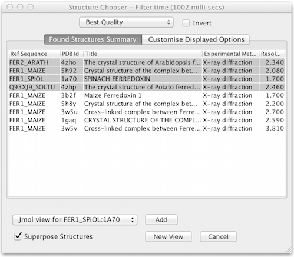

Structure Chooser Dialog Box
The Structure Chooser allows you to select 3D structures to view for the currently selected set of sequences. It is opened by selecting the "3D Structure Data..." option from the Sequence ID panel's pop-up menu. The dialog provides:
Selecting and Viewing Structures
The drop-down menu offers different options for structure discovery; the 'Cached' view is shown automatically if existing structure data has been imported for the selected sequences, and if none is available, the import PDB/mmCIF file options are shown.
Once one or more structures have been selected, pressing the View or Add button will import them a new or existing structure view. When multiple views are available, use the drop-down menu to pick the target viewer for the structures.
Automated discovery of structure data
After selecting "3D Structure Data ..", Jalview queries the PDB via
the PDBe SOLR Rest API provided by EMBL-EBI to discover PDB IDs
associated with the sequence. It does this based on the sequence's
ID string, and any other associated database IDs.
Viewing existing structures for your sequences
If you have already loaded 3D structure data for the selected sequences, the structure chooser will first open with the Cached Structures View. This view shows associations between each sequence, and chains for 3D structure files already in memory. If you want to download additional structures, select one of the other options from the drop down menu.
Selection of the best structure for each sequence
Jalview can automatically select the best structures according to meta-data provided by the PDB. For alignments with no existing structure data, the 'Best Quality' structure for each sequence will by default be selected, but clicking on the drop down menu allows other criteria to be chosen, including Resolution (only defined for X-Ray structures), Highest Protein Chain etc. When 'Invert' is selected, structures are selected in reverse order for the current criteria (e.g. worst quality rather than best).

The screenshot above shows the Structure Chooser displayed after
selecting all the sequences in the Jalview example project. If no
structures were auto-discovered, options for manually associating
PDB records will be shown (see below).
Exploration of meta-data for available structures
Information on each structure available is displayed in columns in the dialog box. By default, only the title, resolution and PDB identifier are shown, but many more are provided by the PDBe. To configure which ones are displayed, select the 'Configure Displayed Columns' tab and tick the columns which you want to see.
Manual selection/association of PDB files with
Sequences
To manually associate PDB files with a sequence, select 'From File', or 'Enter PDB Id' from the drop-down menu:
The Structure Chooser interface was introduced in Jalview 2.9.